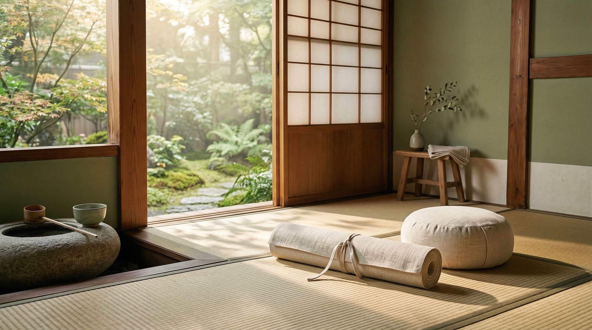

Breathe は、身体の状態だけでなく、気分や生活導線まで含めて整えるウェルネス設計を行います。
Philosophy
自然の移ろいを、 毎日のリズムへ。
ヨガ、瞑想、スパ、リトリートを単発サービスではなく、継続しやすい習慣へ変えるのが役割です。

Our Philosophy
整えるとは、 頑張ることではなく 戻ること。
忙しさに合わせて無理を重ねるのではなく、呼吸、睡眠、巡りを自然な状態へ戻す。
Breathe はそのための習慣導線を設計します。
eco
Nature Rhythm
朝、昼、夜で変わる身体の状態に合わせ、無理のない整え方を組み立てます。
routine
Urban Fit
都市生活の制約を前提に、続けやすい時間設計と導線を整えます。
Our Values
Breatheが 大切にすること
Flow
完璧を目指さず、自然な流れに身を任せる。
それが長く続ける秘訣です。
Light
重くなったら、一度手放す。
軽さを保つことが心身の健康につながります。
Cycle
巡りを意識する。
入力と出力、活動と休息のバランスを。
Team
私たちについて
Breathe は、ヨガインストラクター、セラピスト、ウェルネスデザイナーが集まるチーム。
それぞれが自然と調和する生き方を実践し、その経験をもとにプログラムを提供しています。
10+
Years of Practice
5000+
Sessions Guided
100%
Organic Standards